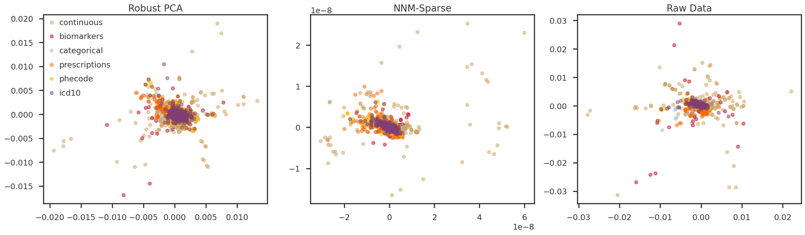

Figure 2: Convergence properties of sparse Nuclear Norm matrix factorization using Frank-Wolfe algorithm
PCA of Low Rank Matrix
Code
def get_principal_components(X): X_cent = mpy_simulate.do_standardize(X, scale =False) X_cent /= np.sqrt(np.prod(X_cent.shape)) U, S, Vt = np.linalg.svd(X_cent, full_matrices =False) pcomps = U @ np.diag(S) loadings = Vt.T @ np.diag(S)return loadings, pcomps, Slowrank_X =dict()loadings =dict()pcomps =dict()eigenvals =dict()for m in mf_methods:if m !='tsvd':withopen (f"{result_dir}/{method_prefix[m]}_lowrank_X.pkl", 'rb') as handle: lowrank_X[m] = pickle.load(handle)lowrank_X['tsvd'] = X_cent.copy()for m in mf_methods: loadings[m], pcomps[m], eigenvals[m] = get_principal_components(lowrank_X[m])
Nuclear Norm of Low Rank Matrix
Code
for m in mf_methods:print (f"{method_names[m]}: {np.linalg.norm(lowrank_X[m], 'nuc'):g}")
RPCA-IALM: 180216
NNM-Sparse-FW: 1023.04
Raw Data: 495872
L0 norm of error matrix
Code
lowrank_E =dict()for m in mf_methods:if m !='tsvd':withopen (f"{result_dir}/{method_prefix[m]}_lowrank_E.pkl", 'rb') as handle: lowrank_E[m] = pickle.load(handle)
Code
for m in mf_methods:if m !='tsvd':print (f"{method_names[m]}: {np.linalg.norm(lowrank_E[m], ord=1):g}")else:print (f"{method_names[m]}: {np.linalg.norm(lowrank_X[m], ord=1):g}")
RPCA-IALM: 2003.58
NNM-Sparse-FW: 3491.56
Raw Data: 4527.88
Plots for Principal Components (Hidden Factors)
In the following figures, we look at the first few principal components (hidden factors) obtained by applying PCA on the predicted low-rank matrices. The samples are colored using the six trait types for the Pan-UKB project. They are: - continuous: Quantitative traits obtained from questionnaires and assessment centers, e.g. standing height, distance between home and job workplace, etc. - biomarkers: Obtained from biological samples, e.g. cholesterol, triglycerides. - prescriptions: Varied treatment/medication/prescriptions, e.g. amoxicillin, corticosteroids, etc. - icd10: Set of ICD10 codes - phecode: PHESANT software? Manually curated by FinnGen? - categorical: Categorical traits obtained from questionnaires and assessment centers, e.g. different self-reported illness, COVID-19, self-reported treatment/medication, etc.
Code
trait_types = trait_df_mod['trait_type'].unique().tolist()trait_colors = {trait: color for trait, color inzip(trait_types, mpl_stylesheet.kelly_colors()[:len(trait_types)])}trait_types.reverse()
Code
fig = plt.figure(figsize = (20, 6))ax = [Nonefor m in mf_methods]ipc1 =0ipc2 =1for i, m inenumerate(mf_methods): ax[i] = fig.add_subplot(1, 3, i+1)for t in trait_types: tidx = np.array(trait_df_mod[trait_df_mod['trait_type'] == t].index) ax[i].scatter(pcomps[m][tidx, ipc1], pcomps[m][tidx, ipc2], alpha =0.5, color = trait_colors[t], label = t) ax[i].set_title(method_names[m])if i ==0: ax[i].legend()plt.tight_layout(h_pad =2.0)plt.show()
Figure 3: PC1 vs PC2
Code
fig = plt.figure(figsize = (20, 6))ax = [Nonefor m in mf_methods]ipc1 =1ipc2 =2for i, m inenumerate(mf_methods): ax[i] = fig.add_subplot(1, 3, i+1)for t in trait_types: tidx = np.array(trait_df_mod[trait_df_mod['trait_type'] == t].index) ax[i].scatter(pcomps[m][tidx, ipc1], pcomps[m][tidx, ipc2], alpha =0.5, color = trait_colors[t], label = t) ax[i].set_title(method_names[m])if i ==0: ax[i].legend()plt.tight_layout(h_pad =2.0)plt.show()
Figure 4: PC2 vs PC3
Code
fig = plt.figure(figsize = (20, 6))ax = [Nonefor m in mf_methods]ipc1 =2ipc2 =3for i, m inenumerate(mf_methods): ax[i] = fig.add_subplot(1, 3, i+1)for t in trait_types: tidx = np.array(trait_df_mod[trait_df_mod['trait_type'] == t].index) ax[i].scatter(pcomps[m][tidx, ipc1], pcomps[m][tidx, ipc2], alpha =0.5, color = trait_colors[t], label = t) ax[i].set_title(method_names[m])if i ==0: ax[i].legend()plt.tight_layout(h_pad =2.0)plt.show()
Figure 5: PC3 vs PC4
Code
fig = plt.figure(figsize = (20, 6))ax = [Nonefor m in mf_methods]ipc1 =3ipc2 =4for i, m inenumerate(mf_methods): ax[i] = fig.add_subplot(1, 3, i+1)for t in trait_types: tidx = np.array(trait_df_mod[trait_df_mod['trait_type'] == t].index) ax[i].scatter(pcomps[m][tidx, ipc1], pcomps[m][tidx, ipc2], alpha =0.5, color = trait_colors[t], label = t) ax[i].set_title(method_names[m])if i ==0: ax[i].legend()plt.tight_layout(h_pad =2.0)plt.show()
Figure 6: PC4 vs PC5
Code
fig = plt.figure(figsize = (20, 6))ax = [Nonefor m in mf_methods]ipc1 =4ipc2 =5for i, m inenumerate(mf_methods): ax[i] = fig.add_subplot(1, 3, i+1)for t in trait_types: tidx = np.array(trait_df_mod[trait_df_mod['trait_type'] == t].index) ax[i].scatter(pcomps[m][tidx, ipc1], pcomps[m][tidx, ipc2], alpha =0.5, color = trait_colors[t], label = t) ax[i].set_title(method_names[m])if i ==0: ax[i].legend()plt.tight_layout(h_pad =2.0)plt.show()
Figure 7: PC5 vs PC6
Code
fig = plt.figure(figsize = (20, 6))ax = [Nonefor m in mf_methods]ipc1 =5ipc2 =6for i, m inenumerate(mf_methods): ax[i] = fig.add_subplot(1, 3, i+1)for t in trait_types: tidx = np.array(trait_df_mod[trait_df_mod['trait_type'] == t].index) ax[i].scatter(pcomps[m][tidx, ipc1], pcomps[m][tidx, ipc2], alpha =0.5, color = trait_colors[t], label = t) ax[i].set_title(method_names[m])if i ==0: ax[i].legend()plt.tight_layout(h_pad =2.0)plt.show()
Figure 8: PC6 vs PC7
Code
fig = plt.figure(figsize = (20, 6))ax = [Nonefor m in mf_methods]ipc1 =6ipc2 =7for i, m inenumerate(mf_methods): ax[i] = fig.add_subplot(1, 3, i+1)for t in trait_types: tidx = np.array(trait_df_mod[trait_df_mod['trait_type'] == t].index) ax[i].scatter(pcomps[m][tidx, ipc1], pcomps[m][tidx, ipc2], alpha =0.5, color = trait_colors[t], label = t) ax[i].set_title(method_names[m])if i ==0: ax[i].legend()plt.tight_layout(h_pad =2.0)plt.show()
Figure 9: PC7 vs PC8
Code
fig = plt.figure(figsize = (20, 6))ax = [Nonefor m in mf_methods]ipc1 =7ipc2 =8for i, m inenumerate(mf_methods): ax[i] = fig.add_subplot(1, 3, i+1)for t in trait_types: tidx = np.array(trait_df_mod[trait_df_mod['trait_type'] == t].index) ax[i].scatter(pcomps[m][tidx, ipc1], pcomps[m][tidx, ipc2], alpha =0.5, color = trait_colors[t], label = t) ax[i].set_title(method_names[m])if i ==0: ax[i].legend()plt.tight_layout(h_pad =2.0)plt.show()

Figure 10: PC8 vs PC9
Code
fig = plt.figure(figsize = (20, 6))ax = [Nonefor m in mf_methods]ipc1 =8ipc2 =9for i, m inenumerate(mf_methods): ax[i] = fig.add_subplot(1, 3, i+1)for t in trait_types: tidx = np.array(trait_df_mod[trait_df_mod['trait_type'] == t].index) ax[i].scatter(pcomps[m][tidx, ipc1], pcomps[m][tidx, ipc2], alpha =0.5, color = trait_colors[t], label = t) ax[i].set_title(method_names[m])if i ==0: ax[i].legend()plt.tight_layout(h_pad =2.0)plt.show()